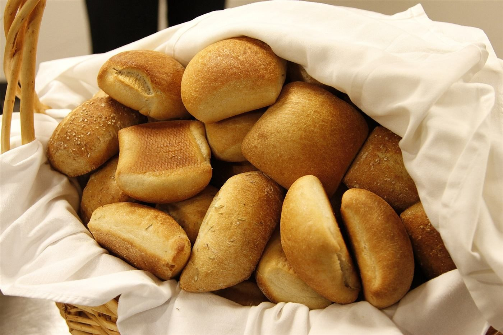

制作側の連想
ホモジナイザーの部位を、配置図にしてみる
このサイトは、液体をなめらかに混ぜる機器「ホモジナイザー」を図にしたつもりで作りました。六つの部位に番号をふり、上の図と並べています。制作側の連想で、お店の理念・由来とは無関係です。実際の機器の仕様を示すものでもありません。



凡例
六つの部位
- 1モーター部回転のもとになる、握って持つ本体の部分。
- 2速度ダイヤル回転の速さを切り替えるためのつまみ。
- 3ジェネレーターシャフトモーターの回転を先端へ伝える、細長い軸。
- 4ローター外筒の内側で回る、先端の回転部品。
- 5ステーターローターを囲む、細いスリット(切れ込み)入りの外筒。
- 6試料容器混ぜたい液体を入れておく、ビーカーのような容器。
ギャラリー(イメージ)
パンとコーヒー豆の写真


写真はパンとコーヒー豆のイメージです。お店のものではなく、お店で提供している商品を示すものでもありません。
ご案内
お店のこと(確認できたものだけ)
| 所在地 | 〒847-0022 佐賀県唐津市鏡6052-1 |
|---|---|
| 電話 | 準備中 |
| 営業時間 | 準備中 |
| 定休日 | 準備中 |
| ご予約 | 準備中 |
| 駐車場 | 準備中 |
| SNS | Instagram @cafe.hasegawa |